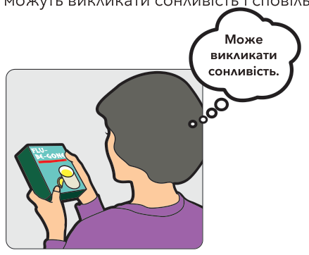
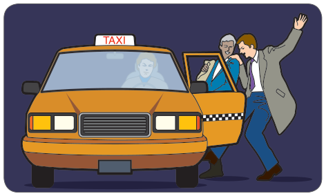
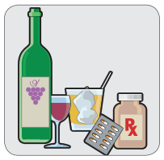
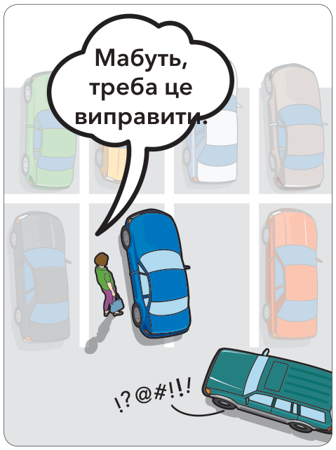
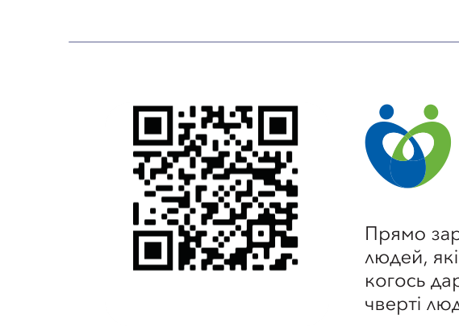
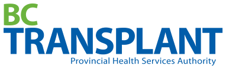

У попередньому розділі ви дізналися, як безпечно спільно користуватися дорогою з іншими учасниками дорожнього руху. У цьому розділі подано стратегії, які допоможуть вам справлятися з ситуаціями, що можуть негативно впливати на вас і на ваше водіння.
Придатність до водіння
Щоб контролювати ситуацію за кермом, ви повинні покладатися на інформацію, яку отримують ваші очі та вуха. Щоб бути безпечним водієм, ви маєте бути здоровим, відпочилим і зосередженим.
Зір і слух
Фахівці оцінюють, що близько 80 відсотків усієї інформації під час водіння водії отримують через зір. Перед тим як отримати посвідчення водія, ви повинні пройти перевірку зору.
Слух також допомагає вам збирати інформацію про дорожню ситуацію. Прислухайтеся до важливих попереджувальних сигналів, як-от звукові сигнали, сирени, свистки поїздів і незвичні шуми у двигуні.
Оцінювання свого здоров’я
Навіть легке нездужання, як-от простуда чи грип, може впливати на вашу пильність. Безрецептурні лікарські засоби можуть викликати сонливість і сповільнювати вашу реакцію.
Якщо у вас є стан здоров’я, який, на вашу думку, може порушувати здатність керувати, обов’язково порадьтеся з лікарем або фармацевтом, перш ніж сісти за кермо.

Як не засинати
Втома — одна з головних причин аварій. Вона впливає на всі етапи стратегії «дивись – думай – дій». Через неї ви можете неточно оглядати дорогу, повільніше думати й довше реагувати.
Як зберігати зосередженість
Коли ви керуєте, ваш розум і чуття мають бути зосереджені лише на водінні. Відволікання можуть впливати на виявлення небезпек і на вашу реакцію.
Телефони та інші пристрої
Усім водіям B.C., включно з водіями GLP (Програма поетапного отримання посвідчення), закон забороняє користуватися портативними електронними пристроями за кермом. Вам не можна:
тримати в руках портативні телефони чи інші електронні засоби зв’язку, користуватися ними або дивитися на них,
надсилати або читати електронні листи чи текстові повідомлення,
користуватися портативними музичними або портативними ігровими пристроями чи тримати їх у руках, і
вручну програмувати або налаштовувати системи GPS під час керування. Закон діє завжди, коли ви керуєте транспортним засобом, — навіть коли ви стоїте на червоний сигнал або в щільному потоці.
Водіям GLP також заборонено користуватися електронними пристроями в режимі «вільні руки» під час керування, окрім виклику 9-1-1 про надзвичайну ситуацію. Суворіші обмеження допомагають водіям GLP зосереджуватися на дорозі, поки вони набувають досвіду водіння. Це означає жодного використання особистих електронних пристроїв у будь-який час, включно з телефонами в режимі «вільні руки», окрім виклику 9-1-1 про надзвичайну ситуацію. Водіям GLP, які отримають один штрафний талон, перевірять історію водіння, і до них можуть застосувати заборону керування.
Якщо вам потрібно зробити або прийняти дзвінок у режимі «вільні руки», безпечніше зупинитися на краю дороги, коли це безпечно.
Небезпечні емоції
Усі ми маємо змінні емоційні стани. Емоції — це потужні сили, які можуть перебивати зосередженість, потрібну для водіння. Коли ви дуже гніваєтеся, тривожитеся, сумуєте або засмучені, ви пропускаєте важливу інформацію. Ваше мислення стає нечітким. Ваша безпека й безпека інших під загрозою.
Іноді ви можете гніватися або втрачати терпіння через дорожнє середовище. Щільний потік і водіння автомагістраллю з високою швидкістю часто викликають стрес. Коли інший транспорт сповільнює вас, а ви спішите, виникає напруження. Водії, які гніваються або перебувають у стресі, менш терпимі до помилок інших учасників дорожнього руху.
Якою б не була причина емоції, важливо оцінити свою емоційну придатність до водіння. Іноді найкраще не сідати за кермо.
Порушення здатності керувати
Факти про алкоголь
Ось кілька способів, якими алкоголь може перешкоджати тому, як ви бачите, думаєте й дієте.
Розділ 9, ваше посвідчення водія, розповідає про деякі штрафи й обвинувачення за водіння з порушенням здатності керувати.
Здатність
Симптоми водія
Вплив на водія
Дивись
схильність дивитися в одну точку
очі не встигають достатньо швидко сприймати інформацію
очі втрачають рефлекси
може засліплювати відблиск
знижена координація зображень
двоїння в очах
знижене сприйняття глибини
не може оцінити відстань і швидкість інших транспортних засобів
звужений периферійний зір
може не бачити небезпек, що йдуть збоку
Думай
мислення стає нечітким
знижена концентрація
емоційний стан стає нестабільним
вважає, що мислення чітке, однак не може приймати обґрунтованих рішень за кермом
Дій
знижений контроль над м’язами
не координує керування рулем і гальмування
підвищена імпульсивність
більше ризикує, перевищує швидкість
знижена координація
перекручує руль; гальмує запізно чи ніяк
уповільнена реакція
не виконує повороти точно
не реагує швидко на надзвичайні ситуації
Міф про алкоголь
Факт про алкоголь
Алкоголь не так подіє на мене, якщо я вип’ю кави, щось з’їм або прийму холодний душ.
Лише час може протверезити вас або знизити вміст алкоголю в крові (BAC). Попри поширену думку, їжа, кава, холодний душ або фізичні вправи не пришвидшують виведення алкоголю з організму. Transport Canada зазначає: якщо ваш BAC становить 0,08, організму потрібно близько шести годин, щоб повністю переробити цей алкоголь і повернутися до BAC нуль.
Пиво впливає на водіння не так сильно, як інші алкогольні напої.
Склянка пива містить стільки ж алкоголю, скільки й склянка вина або середній коктейль. Іноді навіть невелика кількість алкоголю може призвести до порушення здатності керувати.

Факти про наркотики
Наркотики та водіння
Наркотики й лікарські засоби можуть порушувати здатність керувати. Якщо ви їх приймаєте, вам потрібно знати, як вони впливають на вашу здатність безпечно керувати.
Наркотики діють на різних людей по-різному. Якщо є будь-які сумніви щодо безпеки, доручіть водіння комусь іншому.
Лікарські засоби
Безрецептурні лікарські засоби від алергії, кашлю, застуди та нудоти можуть спричиняти:
сонливість
неуважність.
Рецептурні засоби, зокрема седативні, транквілізатори, болезаспокійливі та деякі антидепресанти, можуть впливати на:
пильність
концентрацію
реакцію.
Ці ефекти можуть тривати багато годин після прийому лікарського засобу.
Якщо лікар або фармацевт попереджає вас, що лікарський засіб імовірно вплине на безпеку водіння, поставтеся до цього серйозно. Якщо після прийому засобу ви відчуваєте порушення здатності керувати, не сідайте за кермо — доручіть водіння комусь іншому, доки дія не закінчиться.
Незаконні наркотики
Рекреаційні або вуличні наркотики, як-от спід, героїн і кокаїн, мають широкий спектр впливів, зокрема ті, що зазначені в підрозділі Лікарські засоби на попередній сторінці, а також:
галюцинації
змінене сприйняття
відчуття невразливості
брак розсудливості.
Канабіс
Канабіс може призвести до того, що водій:
не зможе точно відслідковувати рух транспортних засобів або пішоходів
неправильно зрозуміє зорові підказки дорожнього середовища
реагуватиме із запізненням, особливо в надзвичайних ситуаціях.
Наркотики та алкоголь
Багато наркотиків значно посилюють порушення здатності керувати, коли поєднуються навіть з невеликою кількістю алкоголю.
Ризикована поведінка

Нові водії по-різному керують ризиком. Ви, напевно, знаєте водіїв, які невпевнені в тому, які дії обрати, і нервують поруч з іншими учасниками дорожнього руху. Таким людям бракує впевненості у своїх навичках. А ще є надто самовпевнені водії — ті, хто вважає себе значно кращими водіями, ніж вони є насправді. І надто самовпевненим водіям, і тим, кому бракує впевненості, потрібно більше вчитися та більше часу відводити на відпрацювання навичок.
Невелика частина людей обирає небезпечний стиль водіння, шукаючи збудження через перевищення швидкості та ризик. Це шукачі гострих відчуттів — їм подобається перевищувати швидкість, їхати надто близько позаду або небезпечно обганяти.
Який стиль водіння ви плануєте мати? Чи хочете ви залишатися в межах свого рівня навичок? Чи вважаєте ви, що краще бути обережним, ніж занадто часто ризикувати? Ставлення до водіння, або стиль, — це те, що ви обираєте.
Як часто ви ризикуєте?
Як часто ви:
Завжди
Іноді
Ніколи
Перевіряєте через плече?
Їдете в межах обмеження швидкості?
Подаєте сигнал?
Не сідаєте за кермо після алкоголю?
Залишаєте добрий запас простору?
Тиск однолітків
Тиску однолітків важко протистояти. Ми хочемо бути частиною групи, тому чутливі до того, що про нас думають інші. Тиск однолітків буває двох видів: позитивний і негативний. Друзі, які переконують
вас робити безпечні речі, бо піклуються про вас, створюють позитивний тиск однолітків. З іншого боку, друзі або знайомі, які підбурюють вас зробити щось небезпечне, створюють негативний тиск на вас.
Щоб навчитися протистояти тиску однолітків, потрібно багато практики. Ви хочете зберегти друзів, але не хочете, щоб вас переконали робити те, що ставить під загрозу вас та інших.
Небезпечні пасажири
Коли ви за кермом, ви відповідаєте за безпеку своїх пасажирів. Іноді пасажири відволікають вас. Дітям часто стає нудно під час довгих поїздок, і вони вимагають вашої уваги. Пасажири можуть почати гучно розмовляти, дражнитися або борюкатися в автомобілі. Це той момент, коли вам доведеться виявити лідерство й зберегти контроль.
Небезпечні водії
Кожен переживав ситуацію, коли опинявся в автомобілі з кимось, чиє водіння його лякає. Посвідчення водія дає вам більше можливостей упоратися з такою ситуацією, бо ви знаєте правила та норми і знаєте, що означає безпечне водіння. Але переконати небезпечного водія змінити свій стиль водіння нелегко.
Агресія на дорозі
Часто важко зрозуміти, що робити, коли ви стикаєтеся з агресивними водіями. Їхня нечемність і погані звички за кермом можуть призводити до аварій. Крайня агресія, або дорожня лють, трапляється нечасто, але слабка агресія може посилитися, якщо ви не будете обережні. Як вам реагувати?
Запобігання агресії
Як переконатися, що ви не посилюєте гнів чи роздратування інших водіїв? Якщо ви застосовуєте навички розумного водіння, залишаєте достатньо простору та уступаєте право переваги іншим, ви можете допомогти запобігти ситуаціям, які викликають агресію.

Прямо зараз у Британській Колумбії є дуже довгий список людей, які чекають на трансплантацію органів і тканин. Для когось дар органа не надійде вчасно. Проте лише близько чверті людей у B.C. зареєстровані як донори органів.


Кожна людина може стати донором органів. Вікових обмежень немає.